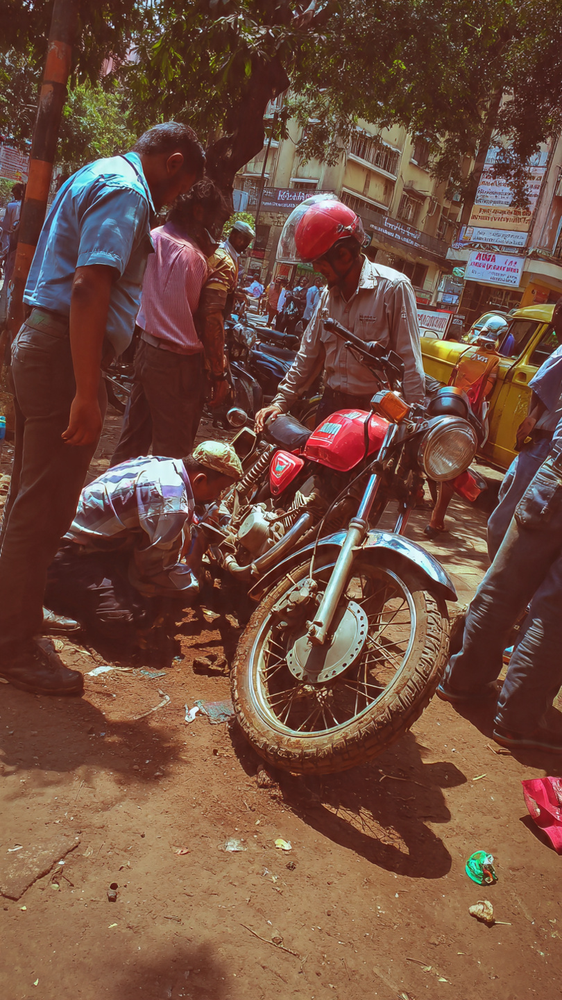

A 27-year-old farmer lost his life in a tragic accident in Penumuru mandal of Chittoor district. The incident occurred when he lost control of his bike while riding on a narrow path near farmland. He fell into a well along with the bike and suffered severe injuries, leading to his death.
In another tragic incident, two people from Tirupati died in a car accident near Gangavaram. Their vehicle crashed into a stationary truck while they were returning from Bengaluru. Four others who were traveling with them were injured and are currently receiving treatment.
These incidents highlight ongoing road safety and rural infrastructure concerns in Chittoor district.